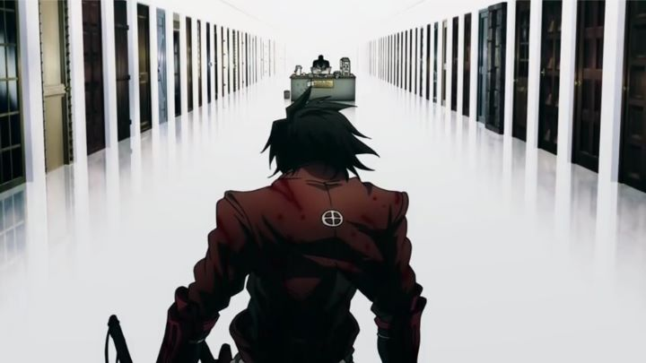

"Hellsing" has an important place in anime culture, at least as far as stylized violence and action is concerned. This is especially true of its long-in-production theatrical OVA series "Hellsing Ultimate." Both owe a lot to the manga author who created its original material, Kouta Hirano, who has an expressive visual style to his blood-thirsty characters. I only mention this because while "Hellsing Ultimate" took nearly a decade to be completed, 2016 would see the anime television series "Drifters," based on Hirano's on-going manga, and very much trying to take advantage of the aesthetic the icon is known for. And while comparisons are inevitable, "Drifters" succeeds enough in being a spiritual sucessor and a damn fun show in its own right. The story introduces us, without fully explaining it, to a pair of dueling God-like figures that recruit notable people of historical legend on their deathbed. Instead of dying in battle or war (as many supposedly have), they are whisked away at the last minute against their will to one of the caretakers, who sends them off to an alternate universe without explaination. At the start, we have three such heroes: the fearless swordsman Shimazu Toyohisa, the madman strategist Oda Nobunaga, and an expert archer Nasu no Yoichi. These "Drifters" are sent to a world of elves and dwarves and humans, and not knowing why they are there, they ultimately begin to assist the elves against their ruthless human oppressors, bringing them closer to their true enemy, "The Ends," also consisting of legendary warriors with a great desire to see humanity destroyed, brought on by the history of their real-life deaths.It's a fun premise to be sure, trading in vampires and nazi zombies with Lord-of-the-Rings-esque lore and every legendary icon known. And while at first it sticks to Japanese heroes (some reveals requiring research to fully appreciate), it quickly reveals other icons, including Joan of Arc from France, or Hannibal the conqueror. Some additions are a little stranger than others: Butch Cassidy and the Sundance Kid don't seem legendary enough to match with the other figures and represent the USA, and while Admiral Tamon Tamaguchi was probably an important figure in Japan's devasting history in World War II, he clearly has nothing to do. But it does succeed in providing reason for interested viewers to investigate the true stories behind the real characters. Even if you have no interest in history, the characters and their taste for violence is endearingly fun to watch, with each character given careful attention to feel distinct."Drifters" isn't for the faint of heart: the elves go through great hardship and the hands of the humans, and the Drifter heroes aren't afraid to use dirty tactics. Much of the surprise comes from Nobunaga's ambitions, from collecting fecal waste to make their arrows more likely to cause deadly infection, to collecting the corpses of their victims to disolve over years as gun-powder for the fights to come. Violence comes as violently as you can imagine, with limbs chopped off, blood spraying everywhere, and flesh and teeth knocked off from boney fists. Fights are filled with cheesy dialogue and smirking. The content is so over-the-top, it almost gives off the opposite effect, to be entertaining rather than horrifying. The creators seem aware of this, peppering almost half of the animated content with exaggerated chibi characters for comedic effect. It does so a bit too often, and not all jokes or cool moments work in its favor. The most obvious mistake is Olminu's character, a ditzy woman in tight clothing often used as comic relief through Nobunaga's sexual harassment after repeated requests to stop, a joke that feels dated, immature, and in modern times, in bad taste. But more often than not, "Drifters" is undeniably cool. That cool streak is almost entirely due to the visuals. Characters are distinctly designed, and often relish in the opportunity to take their opponents down a peg. They do so with twisted grins and glowing eyes instantly recognizable to the manga's artist. The animation on the other hand barely keeps up to its demand, often relying on still shots that highlight the still-frame's art, or applying awkward movement across an environment. Even when characters are often drawn off-model, the visuals are stylized enough that even some of the more questionable animated scenes feel appropriate, so.. I guess the show looks really good. The opening and ending credit animations better rely on a rough style, with some help of Adobe After Effects, and looks absolutely great. Rock songs use a surprising amount of English as much as Japanese, and the English dub actors worked hard to provide appropriate accents to all the characters (even if the Japanese characters all sound like typical dub actors rather than having an accent at all), and going so far as to act a fake, subtitled language for the primary tongue of the elves. Granted, I couldn't always understand what the actors were saying, but it sounds great.The biggest fault is that "Drifters" doesn't yet have an ending. The final minutes of Season 1 reminds us of all the characters introduced but forgotten, and all the story threads stilling hanging in the air, including the showdown and identity of the nemisis known as the Black King (with distinct hints to being a figure from Christian lore), ending with the promise for a Season 2 by 20XX. Bringing a satisfying conclusion to these threads, and perhaps polishing the animation, would have pushed "Drifters" to the max. But even without that, it's one of the more impressive and promising action anime of its era.
- "Ani" More reviews can be found at : https://2danicritic.github.io/ Previous review: review_Dragon_Ball_Z_-_Battle_of_Gods Next review: review_Dusk_Maiden_of_Amnesia